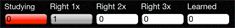
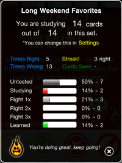

In Practice Mode, card meanings are hidden until you tap the card. Once the meaning is revealed, you can indicate whether you got it right or wrong. If you know the word already, or simply don't like it, you can press bury it - the card will immediately become Learned.
Using the Actions button, you can add the card to other sets (including your starred words), tweet the word, or report a correction.
The first time you get a card right, it moves from Studying to Right 1x. Each time you get it right, it will be promoted to a higher level.
Get it right five times and it will be marked as Learned. The progress pop-up shows detailed results for the current set. Tap the progress bar to display it.
Note that cards that are Learned will still appear - just much less often. Japanese Flash is making sure you haven't forgetten them!
Your goal is to get
each card right 5 times.
Good luck!